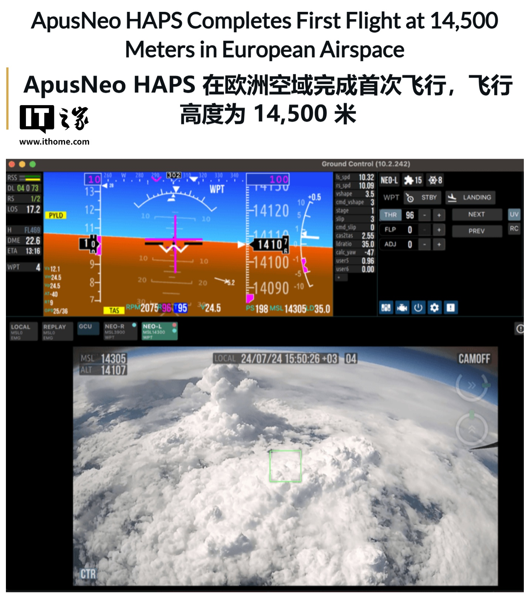
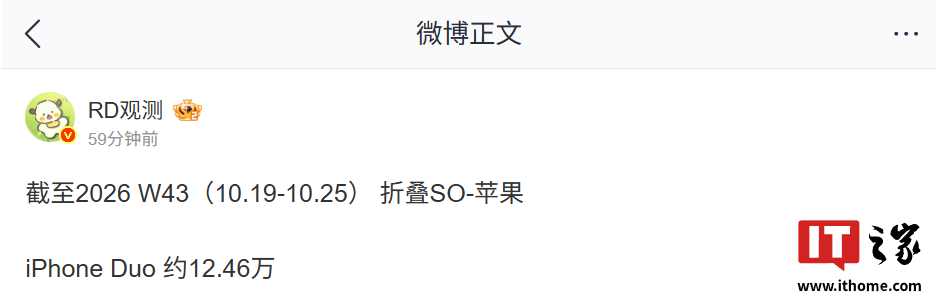
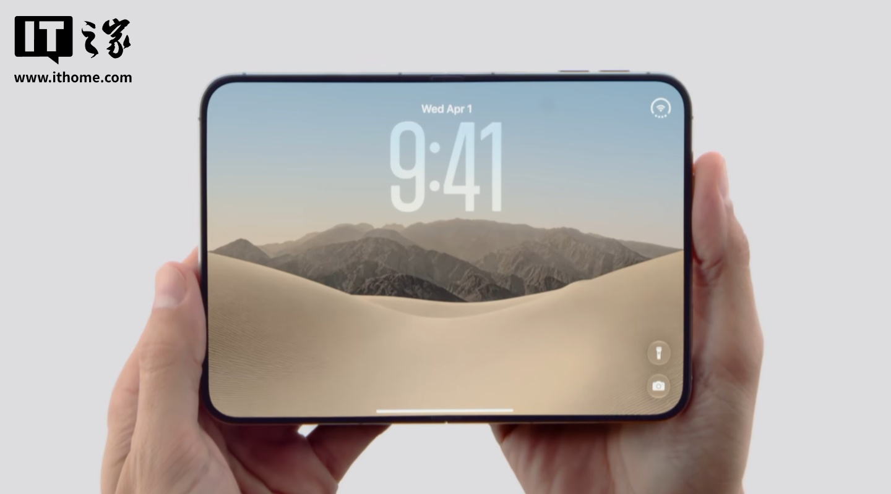
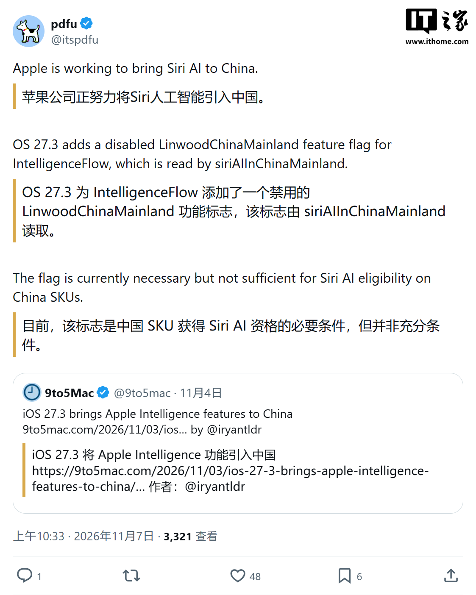

뉴스
기술의 변화, 매일 한눈에.
카메라 · 스마트폰 · AI, 해외 테크 소식을 모아 전합니다.
최근 발행2026-11-08
새로 들어온 소식


최신 뉴스
전체 4,211개 기사
미국 '항공 배달' 경쟁 심화: 구글 계열 Wing, 1억 2,500만 달러 투자해 드론 공장 건설, 월마트 270개 매장 겨냥

Planet AI, 10년 이상 위성 이미지 변화를 한 문장으로 검색하는 '지구에 질문하기' 서비스 공개

온세미, 20억 달러 규모 체코 SiC 웨이퍼 공장 확장 프로젝트 포기 선언

메모리 가격 폭락 전, 각 스마트폰 제조사의 "울트라" 모델 일부 이미지 구성은 이미 단종된 하드웨어에 속한다

남성, Apple iPhone 18 Pro Max 3대 판매 후 차익 남겼지만 사기 연루 자금으로 은행 계좌 동결

한국 스타트업 Lutra, HOA A1 카메라 출시: 독특한 형태로 사진작가와 모델의 눈맞춤 유지 가능

Huawei 창샹 100 시리즈 스마트폰 첫 판매량 공개: 총 21만 5천 대, Pro Max 모델이 약 60% 차지

Honor 700 시리즈 스마트폰 공식 웹사이트 출시: Pro/표준/S 세 가지 모델, 전 모델 후면 스크린 디자인
안드로이드 진영 최초의 와이드 바 타입 스마트폰 Coolpad COOL X Wide 오늘부터 999~1399위안에 판매 시작: MediaTek Helio G99 칩 + 720p 스크린 탑재

최고 14,500m 고도 상승: ApusNeo 태양광 드론, 80시간 비행 후 100시간 연속 비행 기록 경신 도전 중

Apple iPhone Duo 폴더블 디스플레이 스마트폰 첫 주 판매량 공개, 3일 만에 약 12만 4,600대 판매

Apple: 10만 개 이상의 앱이 iPhone Duo 폴더블 디스플레이 스마트폰에 최적화
Apple iOS 키보드에 약 10만 개의 민감한 단어 목록이 숨겨져 있는 것으로 드러나: iPhone 입력기 자동 추천 및 완성 방지, 사용자 수동 입력은 가능

중국판 Siri AI의 새로운 단서: Apple iOS 27.3 첫 개발자 프리뷰 버전에 전용 기능 플래그 추가

육안으로 볼 수 없는 Apple iOS 27.2의 새로운 스텔스 워터마크, AI 이미지 생성/편집 도구로 만든 이미지도 추적 가능

Vivo, 6.5인치 미만 디스플레이의 와이드스크린 스마트폰 개발 중

내년에 바 타입 스마트폰을 출시할 가능성이 높은 제조사는 vivo 산하일 것으로 예상된다

미국 기술주 대량 매도: 머스크, 황젠순 등 5대 부호 하루 만에 1,529억 달러 재산 감소, 필라델피아 반도체 지수 약 12% 하락하며 역대 두 번째 큰 일일 하락폭 기록

미국 증시 AI 하드웨어 주식 일제히 반등, 필라델피아 반도체 지수 6.5% 상승

타오바오 MNN 팀, 0.3B 모바일 모델 오픈소스 공개, Apple iPhone 18 Pro에서 오프라인으로 350 token/s 달성

One UI 9.5 버전 Samsung 헬스 앱 공개: '마음 챙김 노트' 추가, 감정 일기를 스마트폰에 기록
검색 결과가 없습니다
다른 검색어를 입력하거나 필터를 초기화해 보세요.